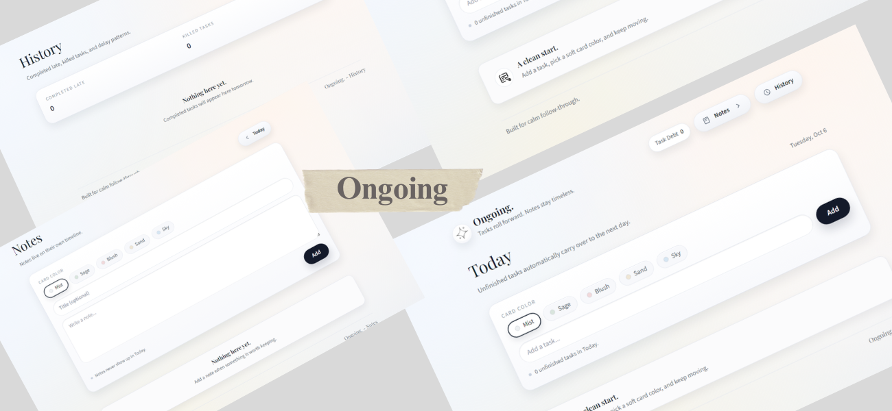

01
Research
Understand the business, offer, market and what the current site is failing to do.
I design strategic, conversion-focused websites for businesses that are ready to look as good online as they are in real life.

I care about the moment a stranger lands on your site and thinks: “Yes. This is exactly what I was looking for.”
I don't jump straight into colours and layouts. I first understand the business and the people it needs to reach — then I turn that insight into a website with a clear purpose.
Understand the business, offer, market and what the current site is failing to do.
Figure out what the buyer needs to see, feel and know before taking action.
Build the information hierarchy and conversion path before styling the page.
Turn the strategy into an interface that is clear, distinctive and easy to use.
Build the responsive experience with clean interactions and attention to detail.
Test the experience, remove friction and put the finished site into the real world.
Neha soni, Thank you so much for the website you built for me, aside the compliment i've been getting... I have closed 5 boked calls this week fro mthe website. You are the bestt out there
Working with her to build the website for Eula Mae's was an absolute breeze. He completely understood our vision as a family-owned restaurant and brought that cozy, welcoming vibe right onto the screen. The site looks beautiful, functions perfectly, and makes it incredibly easy for our customers to find our daily specials and catering info.
Click any project to explore the thinking behind it.





Choose what your business needs now — or book a call and we'll figure it out together.

A complete website built around your business, audience and the action you want visitors to take.
LET'S BUILD IT ↗✳
Focused pages for a specific offer, campaign or audience — without unnecessary noise.
START A PROJECT ↗
Clear shopping experiences designed to make browsing, trusting and buying feel effortless.
START A PROJECT ↗
A practical UX + conversion review showing what is getting in your visitors' way and what to fix first.
AUDIT MY SITE ↗→
I’ve spent the last two years building websites, and one thing keeps showing up. Behind so many businesses are people who are genuinely excellent at what they do, while their website says almost nothing about it.
A page that crawls on a phone. A first screen that leaves visitors guessing. A customer who was ready to reach out, quietly leaving. The owner never finds out.
That’s the gap I work in. Each site starts with the business behind it: who it serves, how those people search, what they need to see first, and what earns their trust. From there I shape a first impression that lands, a mobile experience that loads fast, and a layout that follows how your customers really think and decide.
I’m based in India and work with clients around the world. Every project carries my name, so I treat it that way and sweat the small details most people never notice.
If your website isn’t showing how good your work is, Book a call with me to get started.
BOOK A CALL ↗Good business deserves a website that makes that obvious.